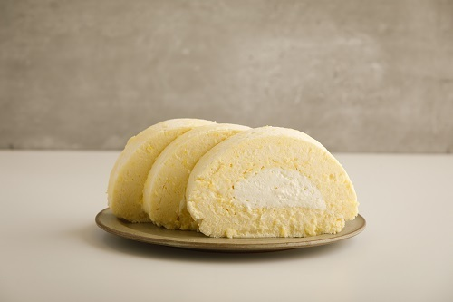
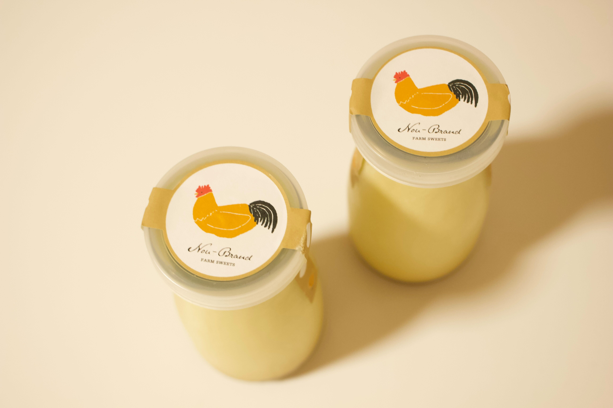
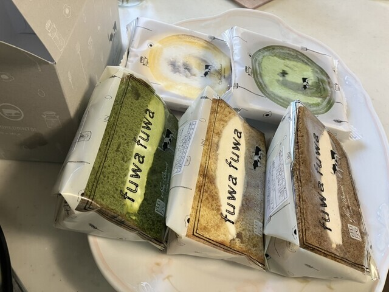

農ブランド
おすすめメニュー

ロールケーキ
愛知県産の卵・乳・小麦を使った、素材の味が際立つしっとり軽やかなロールケーキ。やさしい甘さのクリームと生地が絶妙に調和した逸品。

名古屋コーチンプリン
ミルク缶風ボトルに入った、濃厚な味わいとなめらかな口どけの名古屋コーチンプリン。愛知牧場の牛乳と名古屋コーチン卵を使用した贅沢な一品。

シフォンケーキ
名古屋コーチン卵を使用した、ふわふわでもちもち食感のシフォンケーキ。あきたこまちの米粉が生む上品な甘さが口いっぱいに広がる、やさしい味わいの一品。
住所
468-0058 愛知県名古屋市天白区植田西3丁目901
468-0058 愛知県名古屋市天白区植田西3丁目901
営業時間
10:00~18:00
10:00~18:00
定休日
なし
なし
お店の紹介
「地元の恵みを最高のかたちで届ける」をコンセプトに、愛知県産の素材にこだわったスイーツや加工品を手がけるお店です 地元愛知と全国の厳選素材を融合させて美味しさを生かしたスイーツを作り続けています